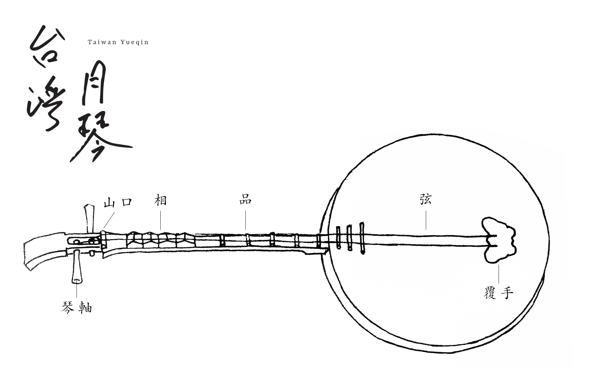
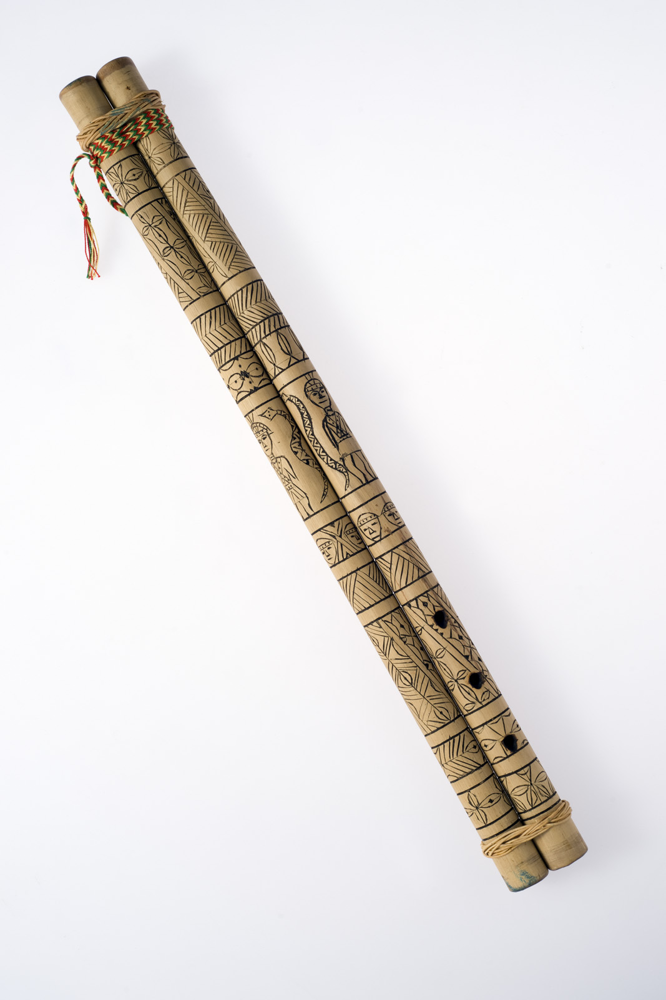
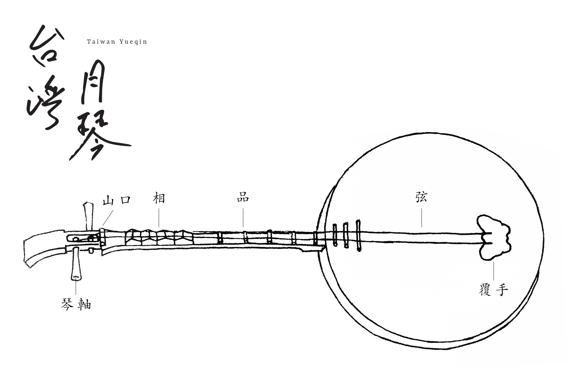
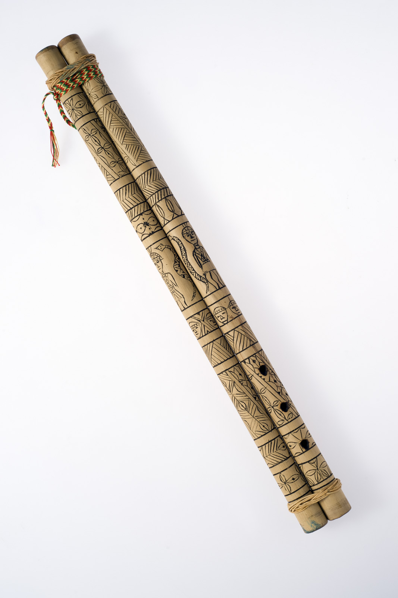

閩南(恆春民謠)
閩南音樂代表性歌謠包括《思想起》，常使用月琴伴奏，歌手如陳達等。
歌手：陳達
樂器：月琴

歌謠：思想起
客家音樂
客家音樂的特色是優美而含蓄，代表性樂器為嗩吶，歌謠如《半山謠》。
歌手：溫子梅

樂器：嗩吶

歌謠：半山謠
原住民音樂
原住民音樂以多聲部合唱聞名，鼻笛是其特色樂器，歌手如少妮瑤。
歌手：少妮瑤

樂器：鼻笛

閩南音樂代表性歌謠包括《思想起》，常使用月琴伴奏，歌手如陳達等。

客家音樂的特色是優美而含蓄，代表性樂器為嗩吶，歌謠如《半山謠》。
原住民音樂以多聲部合唱聞名，鼻笛是其特色樂器，歌手如少妮瑤。
